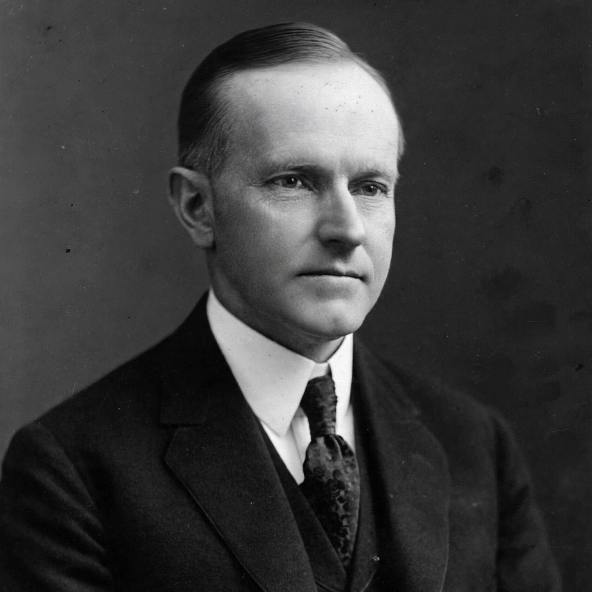

John Calvin Coolidge (4 July 1872 – 5 January 1933) was the 30th president of the United States, serving from 1923 to 1929. A Republican lawyer from New England, nicknamed "Silent Cal", he was known for a quiet manner and small-government conservatism.
| Calvin Coolidge | |
|---|---|
 | |
| President | 2 Aug 1923 – 4 Mar 1929 |
| Predecessor | Warren G. Harding |
| Successor | Herbert Hoover |
| Born | Plymouth Notch, Vermont |
Born in Vermont and educated at Amherst College, Coolidge practised law in Northampton, Massachusetts, rose through state politics, and as governor of Massachusetts gained national fame for his handling of the Boston Police Strike of 1919. He was elected vice president in 1920 under Harding and succeeded to the presidency on Harding's death in August 1923, taking the oath from his father, a notary public, in Vermont.
Re-elected in a landslide in 1924, Coolidge pursued tax cuts, reduced regulation and restrained federal spending during the prosperity of the Roaring Twenties. He signed the Indian Citizenship Act of 1924 and the Kellogg–Briand Pact, restored public confidence after the Harding scandals, and declined to run again in 1928 with the words "I do not choose to run".
Coolidge retired to Northampton, wrote an autobiography and a newspaper column, and died in 1933. Historians have reassessed his presidency, with admirers praising his restraint and critics faulting his inaction on farm distress and regulation before the Great Depression.
Recreated from memory.